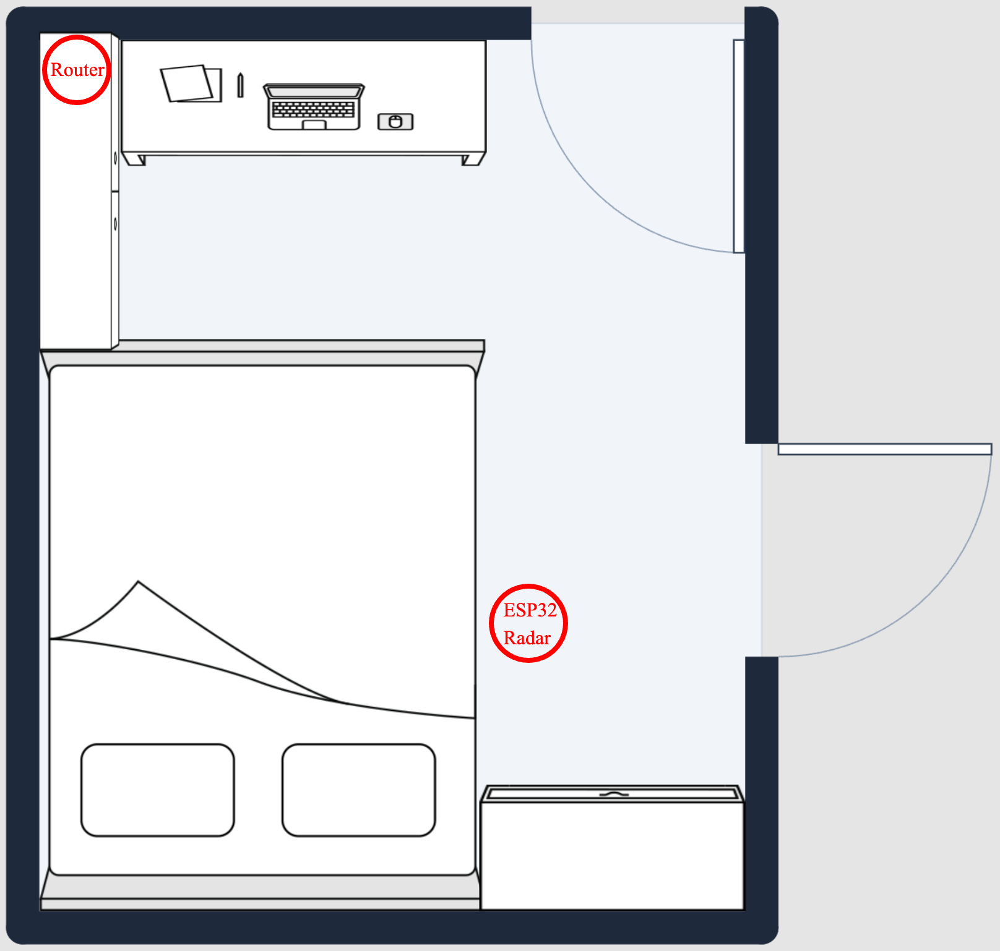
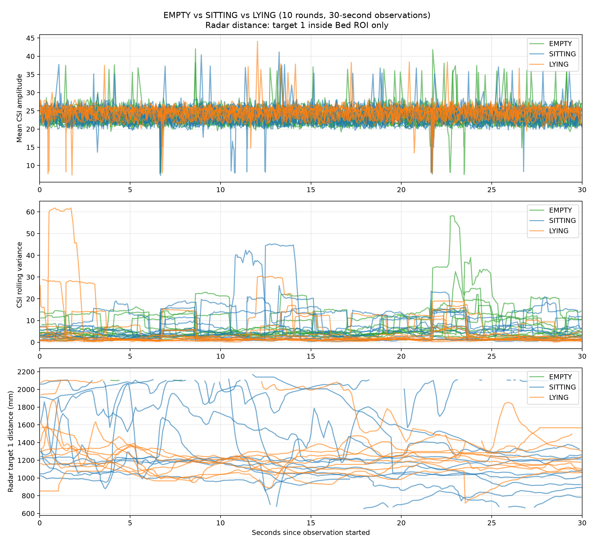
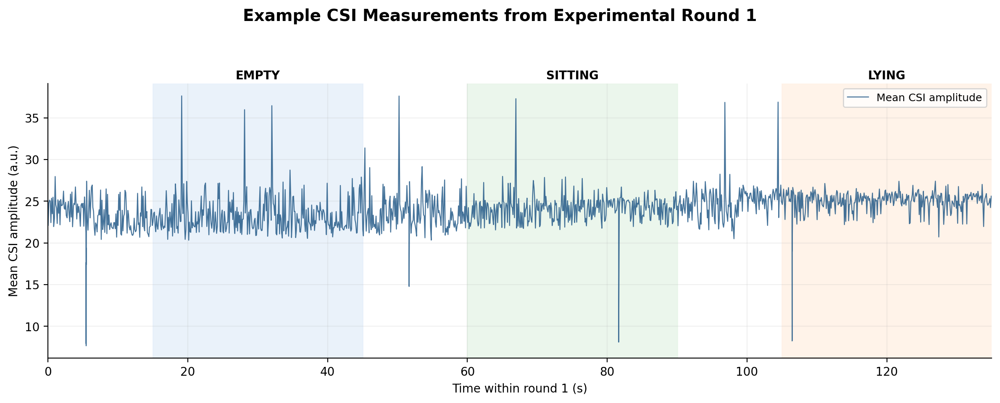
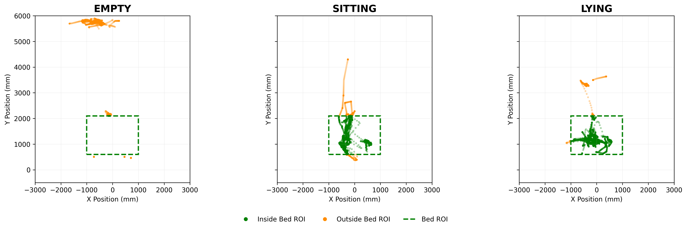
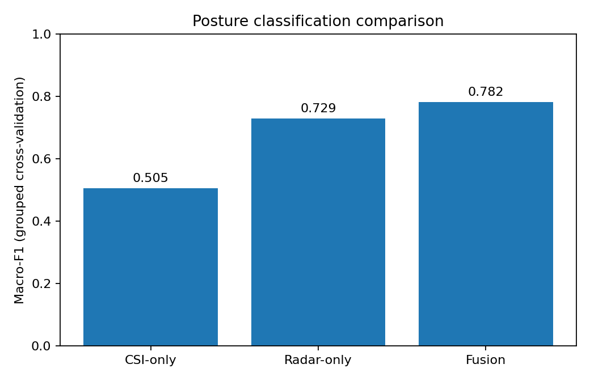
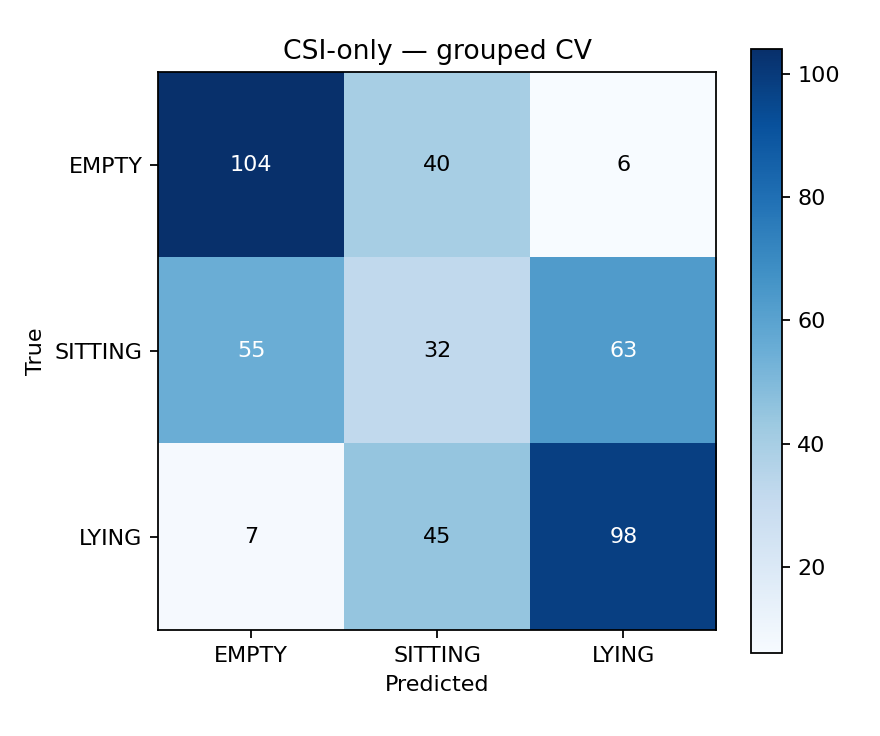
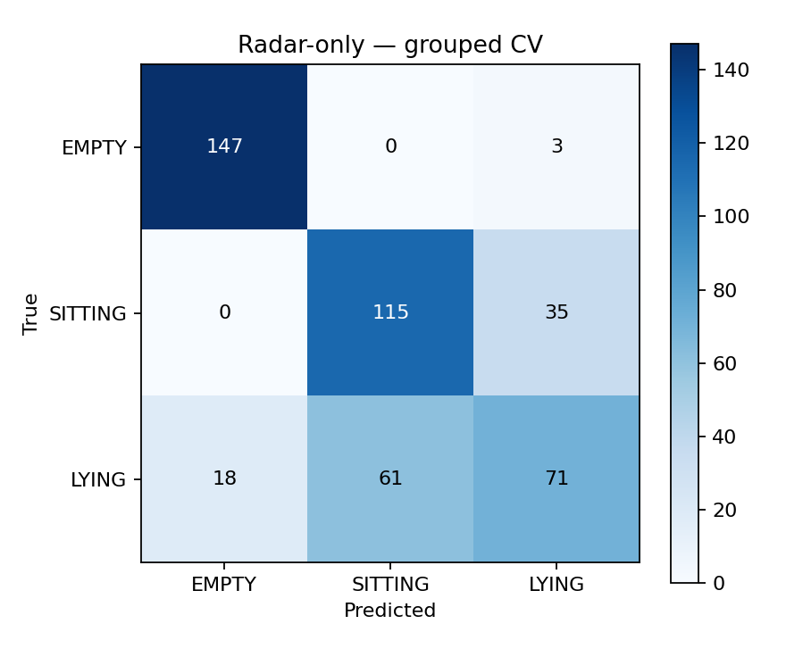
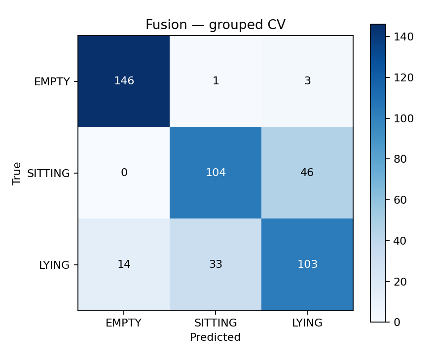

Research log: Wi-Fi CSI and 24 GHz mmWave radar for bedside posture classification and future uncertainty-guided sensor activation.
Project status: Preliminary sensing and classification experiments completed; adaptive activation and energy evaluation planned.
This project studies whether a low-cost bedside sensing system can recognize three states (EMPTY, SITTING, LYING) while reducing energy consumption through selective radar activation. Wi-Fi CSI serves as the primary sensing modality; radar may be enabled when the CSI model is uncertain.
Research question: Can uncertainty-guided radar activation reduce sensing energy while maintaining reliable bedside posture classification?
Evaluation metrics: Macro-F1, radar activation rate, measured power consumption, and decision latency.
The central objective is not only to improve classification through sensor fusion, but also to determine when additional radar measurements are necessary.
Radar UART operates at 256000 baud; the ESP32 streams sensor records to the computer over USB serial at 921600 baud. The two sensing streams are logged concurrently.

Three labeled states were recorded: EMPTY (no person on the bed), SITTING (person seated on the bed), and LYING (person lying on the bed).
All measurements were collected using a fixed sensor arrangement and the same experimental room. The experimenter performed each posture in repeated trials, while sensor measurements were recorded simultaneously. This controlled setup provides an initial feasibility evaluation but does not represent performance across different participants or environments.

CSI measurements were collected through the ESP32 connected to a dedicated Wi-Fi router. Amplitude-related statistics and temporal variations were extracted from the received CSI measurements. These features were aggregated into non-overlapping 2-second windows for posture classification.
Figure 3 shows the mean CSI amplitude recorded during one experimental round. Although the signal exhibits fluctuations across the three observation periods, the amplitude distributions overlap substantially. This suggests that simple amplitude statistics alone may not provide sufficient information to reliably distinguish all three posture states.

The radar may report targets outside the bed even when the bed is empty. Since the bed is positioned close to a wall, radar signals may undergo reflections and multipath propagation, resulting in unexpected target detections. During the EMPTY state, the radar occasionally detected the experimenter standing behind the door, even though the experimenter was outside the radar's intended sensing area. Similarly, during the SITTING and LYING states, an additional target sometimes appeared outside the bed region, potentially due to reflected radar signals creating a ghost target.
To reduce these unwanted detections, a bed region-of-interest (ROI) filter was applied in Python to suppress out-of-region tracks. The initial ROI used X from −1000 to 1000 mm and Y from 600 to 2100 mm, with temporal filtering for stable presence estimates. This approach focuses the analysis on targets located within the bed area rather than relying on all radar detections. However, the ROI is a geometry-based filter, not a general-purpose human detector.

CSI and radar features were aligned into 450 labeled windows. Eight CSI features, eight radar features, and their 16-feature combination were used for model comparison. Missing radar values were handled within training folds to avoid information leakage.
Each 2-second window was treated as one classification sample. Windows without valid radar targets were retained, and missing radar-derived feature values were imputed using statistics learned from the training folds only. This prevents information leakage during cross-validation.
Random Forest classifiers were trained under three input configurations:
| Model | Input | Classifier |
|---|---|---|
| CSI-only | 8 CSI features | Random Forest |
| Radar-only | 8 radar features | Random Forest |
| Fusion | 16 combined features | Random Forest |
Validation: 5-fold GroupKFold with experimental round as the grouping variable. Windows from the same round were not split across training and test partitions.
GroupKFold was used instead of random window-level splitting to reduce data leakage caused by temporal correlation among windows collected within the same experimental round.
| Model | Macro-F1 | Accuracy |
|---|---|---|
| CSI-only | 50.5% | 52.0% |
| Radar-only | 72.9% | 74.0% |
| Fusion | 78.2% | 78.4% |




Interpretation: The fusion model achieved the highest Macro-F1 score of 78.2%, improving upon CSI-only by 27.7 percentage points and radar-only by 5.3 percentage points. Radar-only classification was highly effective for identifying EMPTY states, achieving 98.0% recall. However, it frequently misclassified LYING as SITTING. Sensor fusion improved LYING recall from 47.3% to 68.7%, suggesting that CSI and radar provide complementary information for posture recognition. Despite this improvement, SITTING and LYING remain difficult to distinguish consistently. Furthermore, the relatively low CSI-only Macro-F1 indicates that an uncertainty-guided activation strategy may require frequent radar assistance to maintain reliable classification performance.
Limitations: These are preliminary offline classification results from one fixed experimental setup. They do not establish performance across different rooms, subjects, sensor placements, or recording days.
Proposed decision policy (not yet implemented): Obtain CSI-only class probabilities. If maximum predicted probability is above a selected threshold, use the CSI prediction; otherwise, request radar measurements and use the fusion classifier.
Baseline: Always-on CSI + radar fusion. An offline activation simulation alone is not evidence of measured hardware energy savings.
| Stage | Activity | Status |
|---|---|---|
| 1 | ESP32, router, and LD2450 integration | Completed |
| 2 | Repeated three-state data collection | Completed |
| 3 | ROI filtering and 2-second feature extraction | Completed |
| 4 | Random Forest model training and evaluation | Completed |
| 5 | Offline uncertainty-based activation evaluation | Planned |
| 6 | Power, latency, and generalization experiments | Planned |